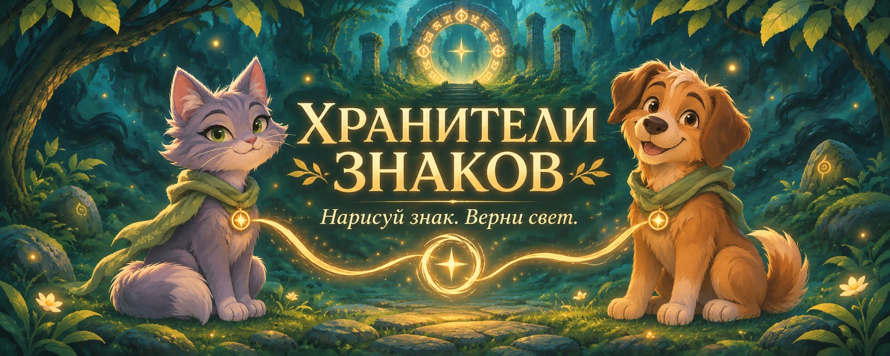

Хранители знаков

Луна и Тоби ждут тебя
Рисуй первый знак
очков
лучшая серия
сердец
ТВОЯ ИСТОРИЯ
Профиль хранителя
Подробная статистика учитывается с этого обновления. Пройденные главы и рекорды сохранены.
Достижения
Достижения общие для профиля. Они не дают преимуществ в бою.